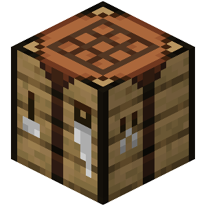
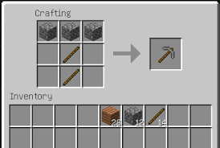
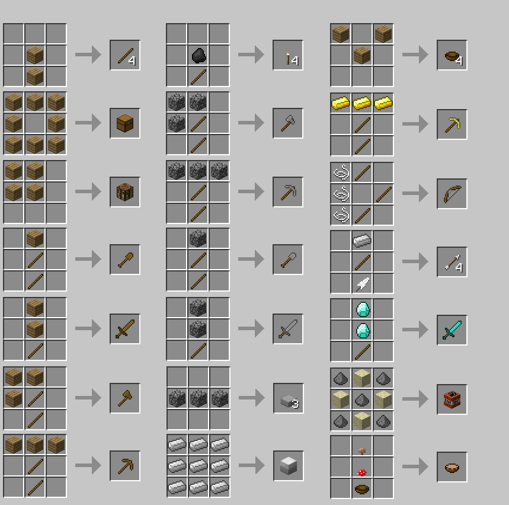

Il Crafting in Minecraft
Il crafting è l'arte di combinare materiali per creare oggetti utili, strumenti e blocchi.
Banco da Lavoro (Crafting Table)
Con un banco da lavoro puoi accedere a una griglia 3x3, indispensabile per costruire la maggior parte degli oggetti avanzati.
- Crafta il banco da lavoro combinando 4 assi di legno
- Usa la griglia per creare utensili, armi e altro


Ricette comuni
Ecco alcune ricette base per iniziare:
- Piccone di legno: 3 assi + 2 bastoni
- Spada di pietra: 2 pietre + 1 bastone
- Torcia: 1 bastone + 1 carbone
Consigli per il crafting
Sperimenta combinazioni diverse per scoprire nuovi oggetti. Usa libri di crafting o risorse online per imparare ricette avanzate.
